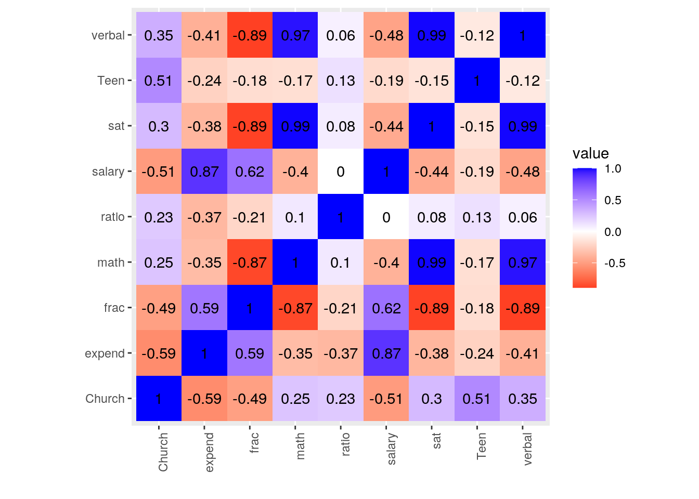
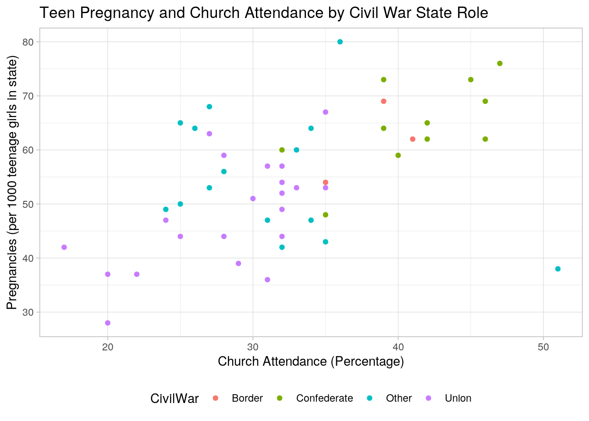
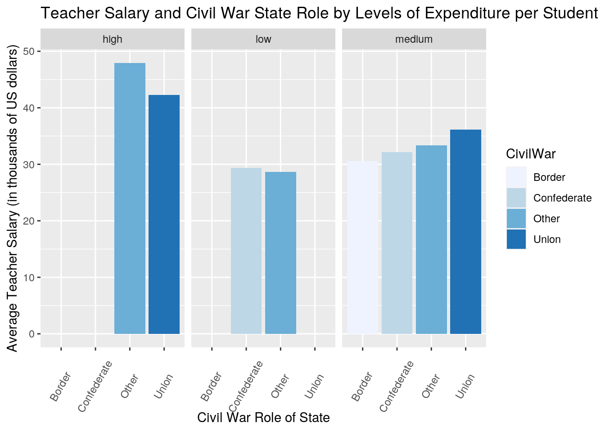
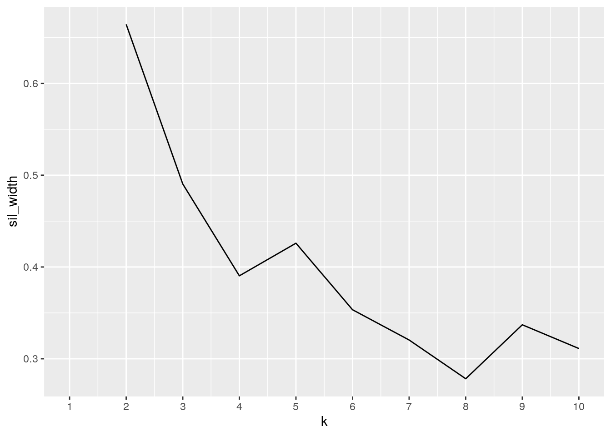
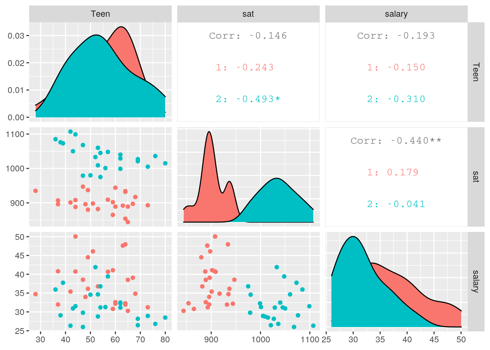
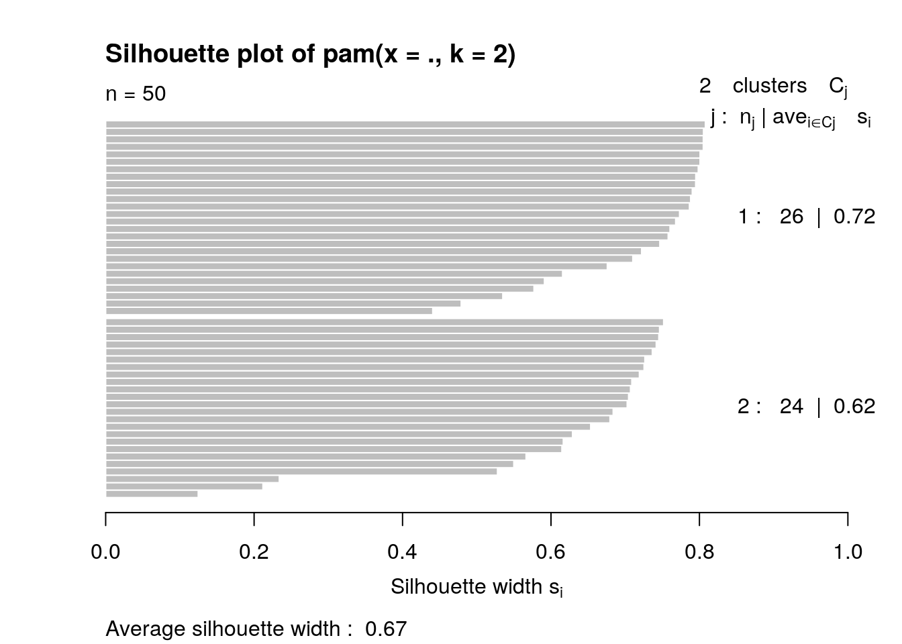

For this project, I was initially interested by the 'TeenPregnancy' dataset found in the 'Stat2Data' r package, and decided to further compare it to SAT scores and measures of educational expenditures data collected per state. This data was found in the 'SAT' dataset from the 'mosaicData' r package. 'TeenPregnancy' contains the variables: State (State abbreviation), CivilWar (Role in Civil War), Church (Percentage who attended church in previous week (found from a state survey)), and Teen (Number of pregnancies per 1000 teenage girls in state). 'SAT' contains variables such as: state, expend (expenditure per pupil in average daily attendance in public elementary and secondary schools, 1994-95 (in thousands of US dollars)), salary (estimated average annual salary of teachers in public elementary and secondary schools, 1994-95 (in thousands of US dollars)), and sat (average total SAT score, 1994-95)). I found these to be interesting because I am curious if there is any potential association between teen pregnancies and SAT scores/ measures of educational expenditures.
To generate one comprehensive dataset, I decided to use full_join. I did this because my datasets only share the 'state' variable, and I want to analyze how the other variables in the datasets vary by state. There are zero observations dumped after the full join because both datasets include data from all fifty states.
str(TeenPregnancy)## tibble [50 × 5] (S3: spec_tbl_df/tbl_df/tbl/data.frame)
## $ X1 : num [1:50] 1 2 3 4 5 6 7 8 9 10 ...
## $ State : chr [1:50] "AK" "AL" "AR" "AZ" ...
## $ CivilWar: chr [1:50] "O" "C" "C" "O" ...
## $ Church : num [1:50] 26 46 45 33 28 25 25 35 32 39 ...
## $ Teen : num [1:50] 64 62 73 60 59 50 44 67 60 64 ...
## - attr(*, "spec")=
## .. cols(
## .. X1 = col_double(),
## .. State = col_character(),
## .. CivilWar = col_character(),
## .. Church = col_double(),
## .. Teen = col_double()
## .. )str(SAT)## 'data.frame': 50 obs. of 9 variables:
## $ X : int 1 2 3 4 5 6 7 8 9 10 ...
## $ State : chr "AL" "AK" "AZ" "AR" ...
## $ expend: num 4.41 8.96 4.78 4.46 4.99 ...
## $ ratio : num 17.2 17.6 19.3 17.1 24 18.4 14.4 16.6 19.1 16.3 ...
## $ salary: num 31.1 48 32.2 28.9 41.1 ...
## $ frac : int 8 47 27 6 45 29 81 68 48 65 ...
## $ verbal: int 491 445 448 482 417 462 431 429 420 406 ...
## $ math : int 538 489 496 523 485 518 477 468 469 448 ...
## $ sat : int 1029 934 944 1005 902 980 908 897 889 854 ...setdiff(TeenPregnancy$State, SAT$State)## character(0)project1 <- full_join(TeenPregnancy, SAT, by = "State")Following the join, I removed two variables that are irrelevant to my project analysis using the select function, and recoded the names in the civil war variable column using mutate for clarification. I filtered the data to return only the states with an average total SAT score greater than or equal to 1000 and arranged them based on the descending order of the number of pregnancies per 1000 teenage girls in the state. Next I grouped the data by the states role in the civil war and found the average number of pregnancies per 1000 teenage girls in the state based on civil war role by using the summarize function. Using mutate, I created a new categorical variable, 'expend_cat', that classifies the expenditure of each state as either 'high','medium', or 'low' based off the quantile values of the 'expend' variable. I created summary statistics (mean, sd, min, max) and pivoted the data to make it more readable. I did this by using 'pivot_longer' and 'separate' to get the statistic and variable in their own column, then used 'pivot_wider' to give each statistic their own column. I repeated this same process grouping by 'CivilWar' to get the summary statistics based off grouping, and also used summarize to count the number of states per each 'CivilWar' type. I created a correlation matrix with my numeric variables.
project1 <- project1 %>% select(-one_of("X", "X1")) %>% mutate(CivilWar = recode(CivilWar,
B = "Border", U = "Union", O = "Other", C = "Confederate"))
project1 %>% filter(sat >= 1000) %>% arrange(desc(Teen))## # A tibble: 20 x 11
## State CivilWar Church Teen expend ratio salary frac verbal math sat
## <chr> <chr> <dbl> <dbl> <dbl> <dbl> <dbl> <int> <int> <int> <int>
## 1 NM Other 36 80 4.59 17.2 28.5 11 485 530 1015
## 2 MS Confederate 47 76 4.08 17.5 26.8 4 496 540 1036
## 3 AR Confederate 45 73 4.46 17.1 28.9 6 482 523 1005
## 4 LA Confederate 46 69 4.76 16.8 26.5 9 486 535 1021
## 5 OK Border 39 69 4.84 15.5 28.2 9 491 536 1027
## 6 AL Confederate 46 62 4.40 17.2 31.1 8 491 538 1029
## 7 TN Confederate 42 62 4.39 18.6 32.5 12 497 543 1040
## 8 IL Union 32 57 6.14 17.3 39.4 13 488 560 1048
## 9 WY Other 28 56 6.16 14.9 31.3 10 476 525 1001
## 10 MO Border 35 54 5.38 15.5 31.2 9 495 550 1045
## 11 KS Union 33 53 5.82 15.1 34.7 9 503 557 1060
## 12 MT Other 27 53 5.69 16.3 28.8 21 473 536 1009
## 13 MI Union 32 52 6.99 20.1 41.9 11 484 549 1033
## 14 SD Other 31 47 4.78 14.4 26.0 5 505 563 1068
## 15 IA Union 32 44 5.48 15.8 31.5 5 516 583 1099
## 16 NE Other 35 43 5.94 14.5 30.9 9 494 556 1050
## 17 ND Other 32 42 4.78 15.3 26.3 5 515 592 1107
## 18 WI Union 29 39 6.93 15.9 37.7 9 501 572 1073
## 19 UT Other 51 38 3.66 24.3 29.1 4 513 563 1076
## 20 MN Union 31 36 6 17.5 35.9 9 506 579 1085project1 %>% group_by(CivilWar) %>% summarize(mean(Teen))## # A tibble: 4 x 2
## CivilWar `mean(Teen)`
## <chr> <dbl>
## 1 Border 61.7
## 2 Confederate 64.6
## 3 Other 55.1
## 4 Union 48.2quantile(project1$expend)## 0% 25% 50% 75% 100%
## 3.65600 4.88175 5.76750 6.43400 9.77400project1 %>% mutate(expend_cat = case_when(expend > 6.5 ~ "high",
expend <= 6.5 & 4.8 <= expend ~ "medium", expend < 4.8 ~
"low"))## # A tibble: 50 x 12
## State CivilWar Church Teen expend ratio salary frac verbal math sat
## <chr> <chr> <dbl> <dbl> <dbl> <dbl> <dbl> <int> <int> <int> <int>
## 1 AK Other 26 64 8.96 17.6 48.0 47 445 489 934
## 2 AL Confede… 46 62 4.40 17.2 31.1 8 491 538 1029
## 3 AR Confede… 45 73 4.46 17.1 28.9 6 482 523 1005
## 4 AZ Other 33 60 4.78 19.3 32.2 27 448 496 944
## 5 CA Union 28 59 4.99 24 41.1 45 417 485 902
## 6 CO Other 25 50 5.44 18.4 34.6 29 462 518 980
## 7 CT Union 25 44 8.82 14.4 50.0 81 431 477 908
## 8 DE Union 35 67 7.03 16.6 39.1 68 429 468 897
## 9 FL Confede… 32 60 5.72 19.1 32.6 48 420 469 889
## 10 GA Confede… 39 64 5.19 16.3 32.3 65 406 448 854
## # … with 40 more rows, and 1 more variable: expend_cat <chr>project1 %>% summarize_if(is.numeric, list(mean = mean, sd = sd,
min = min, max = max), na.rm = T) %>% pivot_longer(contains("_")) %>%
separate(name, into = c("variable", "statistic")) %>% pivot_wider(names_from = "statistic",
values_from = "value")## # A tibble: 9 x 5
## variable mean sd min max
## <chr> <dbl> <dbl> <dbl> <dbl>
## 1 Church 32.6 7.50 17 51
## 2 Teen 54.7 11.7 28 80
## 3 expend 5.91 1.36 3.66 9.77
## 4 ratio 16.9 2.27 13.8 24.3
## 5 salary 34.8 5.94 26.0 50.0
## 6 frac 35.2 26.8 4 81
## 7 verbal 457. 35.2 401 516
## 8 math 509. 40.2 443 592
## 9 sat 966. 74.8 844 1107project1 %>% group_by(CivilWar) %>% summarize_if(is.numeric,
list(mean = mean, sd = sd, min = min, max = max), na.rm = T) %>%
pivot_longer(contains("_")) %>% separate(name, into = c("variable",
"statistic")) %>% pivot_wider(names_from = "statistic", values_from = "value")## # A tibble: 36 x 6
## CivilWar variable mean sd min max
## <chr> <chr> <dbl> <dbl> <dbl> <dbl>
## 1 Border Church 38.3 3.06 35 41
## 2 Border Teen 61.7 7.51 54 69
## 3 Border expend 5.15 0.275 4.84 5.38
## 4 Border ratio 16 0.866 15.5 17
## 5 Border salary 30.5 2.12 28.2 32.3
## 6 Border frac 9.67 1.15 9 11
## 7 Border verbal 488. 9.45 477 495
## 8 Border math 536 14 522 550
## 9 Border sat 1024. 23.2 999 1045
## 10 Confederate Church 41.2 4.79 32 47
## # … with 26 more rowsproject1 %>% group_by(CivilWar) %>% summarize_if(is.character,
n_distinct)## # A tibble: 4 x 2
## CivilWar State
## <chr> <int>
## 1 Border 3
## 2 Confederate 11
## 3 Other 15
## 4 Union 21project1 %>% select_if(is.numeric) %>% cor(use = "pair")## Church Teen expend ratio salary frac
## Church 1.0000000 0.5091749 -0.5861965 0.232311353 -0.512863288 -0.4915622
## Teen 0.5091749 1.0000000 -0.2361560 0.132242669 -0.193013117 -0.1784025
## expend -0.5861965 -0.2361560 1.0000000 -0.371025386 0.869801513 0.5926274
## ratio 0.2323114 0.1322427 -0.3710254 1.000000000 -0.001146081 -0.2130536
## salary -0.5128633 -0.1930131 0.8698015 -0.001146081 1.000000000 0.6167799
## frac -0.4915622 -0.1784025 0.5926274 -0.213053607 0.616779867 1.0000000
## verbal 0.3457575 -0.1167030 -0.4100499 0.063766636 -0.476963635 -0.8932630
## math 0.2505191 -0.1699791 -0.3494141 0.095421730 -0.401312817 -0.8693839
## sat 0.2971697 -0.1462045 -0.3805370 0.081253823 -0.439883381 -0.8871187
## verbal math sat
## Church 0.34575752 0.25051909 0.29716967
## Teen -0.11670296 -0.16997908 -0.14620446
## expend -0.41004987 -0.34941409 -0.38053700
## ratio 0.06376664 0.09542173 0.08125382
## salary -0.47696364 -0.40131282 -0.43988338
## frac -0.89326296 -0.86938393 -0.88711868
## verbal 1.00000000 0.97025604 0.99150325
## math 0.97025604 1.00000000 0.99350238
## sat 0.99150325 0.99350238 1.00000000# Correlation heatmap of numeric variables.
project1 %>% select_if(is.numeric) %>% cor(use = "pair") %>%
as.data.frame %>% rownames_to_column %>% pivot_longer(-1) %>%
ggplot(aes(rowname, name, fill = value)) + geom_tile() +
geom_text(aes(label = round(value, 2))) + xlab("") + ylab("") +
theme(axis.text.x = element_text(angle = 90, hjust = 1)) +
coord_fixed() + scale_fill_gradient2(low = "red", mid = "white",
high = "blue")
# Scatterplot.
project1 %>% ggplot(aes(x = Church, y = Teen)) + geom_point(aes(color = CivilWar)) +
theme_light() + ggtitle("Teen Pregnancy and Church Attendance by Civil War State Role") +
theme(legend.position = "bottom") + scale_color_discrete() +
xlab("Church Attendance (Percentage)") + ylab("Pregnancies (per 1000 teenage girls in state)")
# Bar chart.
project1 %>% mutate(expend_cat = case_when(expend > 6.5 ~ "high",
expend <= 6.5 & 4.8 <= expend ~ "medium", expend < 4.8 ~
"low")) %>% ggplot(aes(CivilWar, salary, fill = CivilWar)) +
geom_bar(stat = "summary", fun = mean) + facet_wrap(~expend_cat) +
xlab("Civil War Role of State") + ylab("Average Teacher Salary (in thousands of US dollars)") +
ggtitle("Teacher Salary and Civil War State Role by Levels of Expenditure per Student") +
scale_fill_brewer(palette = "Blues") + theme(axis.text.x = element_text(angle = 60,
vjust = 0.4)) The correlation heatmap primarily shows moderate correlations between most of the numeric variables. Overall, 'verbal', 'sat', 'math', and 'frac' all show strong correlations with each other. 'Salary' and 'expend' have a fairly strong positive correlation of 0.87. The scatterplot shows an overall positive correlation between church attendance and teen pregnancies. The 'confederate' states tend to have a higher church attendance percentage and reported teen pregnancies, while the 'union' states tend to have a lower church attendance percentage and reported teen pregnancies. 'Border' and 'other' states generally fall in the middle range relative to the other states. The bar chart shows that 'medium' level expenditures are found in all civil war state types, and that the 'union' states in the medium range have the highest average teacher salary while the 'border' states in the medium range have the lowest average teacher salary. 'Low' level expenditures are found only in 'other' and 'confederate' states and have the lowest average teacher salary overall. 'High' level expenditures are found only in 'other' and 'union' states and have the highest average teacher salary overall. 'High' level expenditures have higher average teacher salaries whereas 'low' level expenditures have the lowest average teacher salaries.
# Determine appropriate number of clusters.
library(cluster)
pam_dat <- project1 %>% select(Teen, sat, salary)
kmeans1 <- pam_dat %>% scale %>% kmeans(3)
kmeans1## K-means clustering with 3 clusters of sizes 14, 19, 17
##
## Cluster means:
## Teen sat salary
## 1 -0.8256122 1.04165412 -0.4441560
## 2 -0.2585921 -0.69040974 0.9466841
## 3 0.9689307 -0.08619839 -0.6922831
##
## Clustering vector:
## [1] 2 3 3 3 2 1 2 2 3 3 2 1 1 1 2 1 3 3 2 2 2 2 1 1 3 1 3 1 1 1 2 3 3 2 2 3 2 2
## [39] 2 3 1 3 3 1 2 2 2 1 3 3
##
## Within cluster sum of squares by cluster:
## [1] 18.34242 27.97169 21.60165
## (between_SS / total_SS = 53.8 %)
##
## Available components:
##
## [1] "cluster" "centers" "totss" "withinss" "tot.withinss"
## [6] "betweenss" "size" "iter" "ifault"kmeansclust <- project1 %>% mutate(cluster = as.factor(kmeans1$cluster))
sil_width <- vector()
for (i in 2:10) {
kms <- kmeans(pam_dat, centers = i)
sil <- silhouette(kms$cluster, dist(project1))
sil_width[i] <- mean(sil[, 3])
}
ggplot() + geom_line(aes(x = 1:10, y = sil_width)) + scale_x_continuous(name = "k",
breaks = 1:10)
pam1 <- pam_dat %>% pam(k = 2)
pam1## Medoids:
## ID Teen sat salary
## [1,] 5 59 902 41.078
## [2,] 2 62 1029 31.144
## Clustering vector:
## [1] 1 2 2 1 1 2 1 1 1 1 1 2 2 2 1 2 2 2 1 1 1 2 2 2 2 2 1 2 2 1 1 2 1 1 2 2 1 1
## [39] 1 1 2 2 1 2 1 1 1 2 1 2
## Objective function:
## build swap
## 38.76484 29.30755
##
## Available components:
## [1] "medoids" "id.med" "clustering" "objective" "isolation"
## [6] "clusinfo" "silinfo" "diss" "call" "data"pamclust <- pam_dat %>% mutate(cluster = as.factor(pam1$clustering))
library(tidyverse)
library(dplyr)
library(GGally)
pamclust %>% ggpairs(columns = 1:3, aes(color = cluster))
pamclust %>% group_by(cluster) %>% summarize_if(is.numeric, mean,
na.rm = T)## # A tibble: 2 x 4
## cluster Teen sat salary
## <fct> <dbl> <dbl> <dbl>
## 1 1 54.5 901. 37.7
## 2 2 54.9 1036. 31.7plot(pam1, which = 2)
To begin the cluster analysis, I first processed my data by scaling three of my numeric variables because the units differ: 'Teen','sat', and 'salary'. I then choose my number of clusters by selecting the k value with the highest silhouette width on the graph. This value was 2. The average silhouette width is 0.67, which is interpreted as reasonable structure being found.I used only numerical values, so using gower was not necessary, and I ran PAM cluster analysis. From the visualization of the clusters, the correlation between 'sat' and 'Teen' is -0.146. The correlation between 'salary' and 'Teen' is -0.193. The correlation between 'salary' and 'sat' is -0.440. None of these correlation values show strong correlation.
...